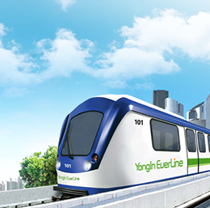

안전경영
안전경영방침 (Safety Management Policy)
용인경량전철㈜ 및 네오트랜스㈜ 전 임직원은 안전하고 편리한 교통서비스로 고객에게 봉사하기 위하여 고객의 안전을 최고의 가치로 인식하고, 안전관리체계를 지속적으로 개선하고 증진하기 위하여 다음 사항을 준수한다.
- 전 임직원은 해당 분야 별로 안전목표와 실천 계획을 수립하여 실행하고 안전성과를 확인하여 개선하는 등 지속적이고 자율적인 안전활동을 전개한다.
- 최고 수준의 안전경영을 위하여 관련 법령 요구사항을 준수하고 자원 투자를 지속적으로 추진한다.
- 지속적으로 체계적인 교육과 훈련으로 열차 안전 운행 및 위기관리 능력을 제고한다.
- 철도차량 및 시설에 대한 철저한 유지보수활동으로 용인경전철의 안전성을 확보한다.